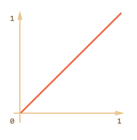

JavaScript-анимация применяется там, где не подходит CSS.
Например, по сложной траектории, с временной функцией, выходящей за рамки кривых Безье, на canvas. Иногда её используют для анимации в старых IE.
setInterval
С точки зрения HTML/CSS, анимация – это постепенное изменение стиля DOM-элемента. Например, увеличение координаты style.left от 0px до 100px сдвигает элемент.
Если увеличивать left от 0 до 100 при помощи setInterval, делая по 50 изменений в секунду, то это будет выглядеть как плавное перемещение. Тот же принцип, что и в кино: для непрерывной анимации достаточно 24 или больше вызовов setInterval в секунду.
Псевдо-код для анимации выглядит так:
var fps = 50; // 50 кадров в секунду
var timer = setInterval(function() {
if (время вышло) clearInterval(timer);
else немного увеличить left
}, 1000 / fps)Более полный пример кода анимации:
var start = Date.now(); // сохранить время начала
var timer = setInterval(function() {
// вычислить сколько времени прошло с начала анимации
var timePassed = Date.now() - start;
if (timePassed >= 2000) {
clearInterval(timer); // конец через 2 секунды
return;
}
// рисует состояние анимации, соответствующее времени timePassed
draw(timePassed);
}, 20);
// в то время как timePassed идёт от 0 до 2000
// left принимает значения от 0 до 400px
function draw(timePassed) {
train.style.left = timePassed / 5 + 'px';
}Кликните для демонстрации:
<!DOCTYPE HTML>
<html>
<head>
<style>
#train {
position: relative;
cursor: pointer;
}
</style>
</head>
<body>
<img id="train" src="https://js.cx/clipart/train.gif">
<script>
train.onclick = function() {
var start = Date.now(); // сохранить время начала
var timer = setInterval(function() {
// вычислить сколько времени прошло из opts.duration
var timePassed = Date.now() - start;
train.style.left = timePassed / 5 + 'px';
if (timePassed > 2000) clearInterval(timer);
}, 20);
}
</script>
</body>
</html>requestAnimationFrame
Если у нас не один такой setInterval, а несколько в разных местах кода, то браузеру нужно в те же 20 мс работать со страницей уже несколько раз. А ведь кроме setInterval есть ещё другие действия, к примеру, прокрутка страницы, которую тоже надо нарисовать.
Если все действия по перерисовке производить независимо, то будет выполняться много двойной работы.
Гораздо выгоднее с точки зрения производительности – сгруппировать все перерисовки в одну и запускать их централизованно, все вместе.
Для этого в JavaScript-фреймворках, которые поддерживают анимацию, есть единый таймер:
setInterval(function() {
/* отрисовать все анимации */
}, 20);…Все анимации, которые запускает такой фреймворк, добавляются в общий список, и раз в 20 мс единый таймер проверяет его, запускает текущие, удаляет завершившиеся.
Современные браузеры, кроме IE9-, поддерживают стандарт Animation timing, который представляет собой дальнейший шаг в этом направлении. Он позволяет синхронизировать наши анимации со встроенными механизмами обновления страницы. То есть, сгруппированы будут не только наши, но и CSS-анимации и другие браузерные перерисовки.
При этом графический ускоритель будет использован максимально эффективно, и исключена повторная обработка одних и тех же участков страницы. А значит – меньше будет загрузка CPU, да и сама анимация станет более плавной.
Для этого используется функция requestAnimationFrame.
Синтаксис:
var requestId = requestAnimationFrame(callback)Такой вызов планирует запуск callback в ближайшее время, когда браузер сочтёт возможным осуществить анимацию.
Если запланировать в callback какое-то рисование, то оно будет сгруппировано с другими requestAnimationFrame и с внутренними перерисовками браузера.
Возвращаемое значение requestId служит для отмены запуска:
// отменить запланированное выше выполнение callback
cancelAnimationFrame(requestId);Функция callback получает один аргумент – время, прошедшее с начала загрузки страницы, результат вызова performance.now().
Как правило, запуск callback происходит очень скоро. Если у процессора большая загрузка или батарея у ноутбука почти разряжена – то пореже.
Если вы запустите этот код, то увидите промежутки между первыми 20 запусками requestAnimationFrame. Как правило, это 10-20 мс, но бывает и больше и меньше. Это оптимальная частота анимации с точки зрения браузера.
<script>
var prev = performance.now();
var times = 0;
requestAnimationFrame(function measure(time) {
document.body.insertAdjacentHTML("beforeEnd", Math.floor(time - prev) + " ");
prev = time;
if (times++ < 10) requestAnimationFrame(measure);
})
</script>Функция анимации на основе requestAnimationFrame:
// Рисует функция draw
// Продолжительность анимации duration
function animate(draw, duration) {
var start = performance.now();
requestAnimationFrame(function animate(time) {
// определить, сколько прошло времени с начала анимации
var timePassed = time - start;
// возможно небольшое превышение времени, в этом случае зафиксировать конец
if (timePassed > duration) timePassed = duration;
// нарисовать состояние анимации в момент timePassed
draw(timePassed);
// если время анимации не закончилось - запланировать ещё кадр
if (timePassed < duration) {
requestAnimationFrame(animate);
}
});
}Использование для поезда:
animate(function(timePassed) {
train.style.left = timePassed / 5 + 'px';
}, 2000);В действии:
<!DOCTYPE HTML>
<html>
<head>
<style>
#train {
position: relative;
cursor: pointer;
}
</style>
</head>
<body>
<img id="train" src="https://js.cx/clipart/train.gif">
<script>
train.onclick = function() {
animate(function(timePassed) {
train.style.left = timePassed / 5 + 'px';
}, 2000);
};
// Рисует функция draw
// Продолжительность анимации duration
function animate(draw, duration) {
var start = performance.now();
requestAnimationFrame(function animate(time) {
// определить, сколько прошло времени с начала анимации
var timePassed = time - start;
console.log(time, start)
// возможно небольшое превышение времени, в этом случае зафиксировать конец
if (timePassed > duration) timePassed = duration;
// нарисовать состояние анимации в момент timePassed
draw(timePassed);
// если время анимации не закончилось - запланировать ещё кадр
if (timePassed < duration) {
requestAnimationFrame(animate);
}
});
}
</script>
</body>
</html>Структура анимации
На основе requestAnimationFrame можно соорудить и гораздо более мощную, но в то же время простую функцию анимации.
У анимации есть три основных параметра:
duration-
Общее время, которое должна длиться анимация, в мс. Например,
1000. timing(timeFraction)-
Временная функция, которая, по аналогии с CSS-свойством
transition-timing-function, будет по текущему времени вычислять состояние анимации.Она получает на вход непрерывно возрастающее число
timeFraction– от0до1, где0означает самое начало анимации, а1– её конец.Её результатом должно быть значение завершённости анимации, которому в CSS transitions на кривых Безье соответствует координата
y.Также по аналогии с
transition-timing-functionдолжны соблюдаться условия:
-
timing(0) = 0
-
timing(1) = 1
…То есть, анимация начинается в точке
(0,0)– нулевое время и нулевой прогресс и заканчивается в(1, 1)– прошло полное время, и процесс завершён.Например, функция-прямая означает равномерное развитие процесса:
function linear(timeFraction) { return timeFraction; }Её график: 
Как видно, её график полностью совпадает с
transition-timing-function: linear, и эффект абсолютно такой же.Есть и другие, более интересные варианты, мы рассмотрим их чуть позже.
draw(progress)-
Функция, которая получает состояние завершённости анимации и рисует его. Значению
progress=0соответствует начальная точка анимации,progress=1– конечная.Именно эта функция и осуществляет, собственно, анимацию.
Например, может двигать элемент:
function draw(progress) { train.style.left = progress + 'px'; }Возможны любые варианты, анимировать можно что угодно и как угодно.
Анимируем ширину элемента width от 0 до 100%, используя нашу функцию.
Кликните для демонстрации:
function animate(options) {
var start = performance.now();
requestAnimationFrame(function animate(time) {
// timeFraction от 0 до 1
var timeFraction = (time - start) / options.duration;
if (timeFraction > 1) timeFraction = 1;
// текущее состояние анимации
var progress = options.timing(timeFraction)
options.draw(progress);
if (timeFraction < 1) {
requestAnimationFrame(animate);
}
});
}<!DOCTYPE HTML>
<html>
<head>
<meta charset="utf-8">
<style>
progress {
width: 5%;
}
</style>
<script src="animate.js"></script>
</head>
<body>
<progress id="elem"></progress>
<script>
elem.onclick = function() {
animate({
duration: 1000,
timing: function(timeFraction) {
return timeFraction;
},
draw: function(progress) {
elem.style.width = progress * 100 + '%';
}
});
};
</script>
</body>
</html>Код для запуска анимации:
animate({
duration: 1000,
timing: function(timeFraction) {
return timeFraction;
},
draw: function(progress) {
elem.style.width = progress * 100 + '%';
}
});Временные функции
Выше мы видели самую простую, линейную временную функцию.
Рассмотрим примеры анимации движения с использованием различных timing.
В степени n
Вот еще один простой случай – progress в степени n. Частные случаи – квадратичная, кубическая функции и т.д.
Для квадратичной функции:
function quad(progress) {
return Math.pow(progress, 2)
}График квадратичной функции:
Пример для квадратичной функции (клик для просмотра):
Увеличение степени влияет на ускорение. Например, график для 5-й степени:
В действии:
Дуга
Функция:
function circ(timeFraction) {
return 1 - Math.sin(Math.acos(timeFraction))
}График:
Back: стреляем из лука
Эта функция работает по принципу лука: сначала мы «натягиваем тетиву», а затем «стреляем».
В отличие от предыдущих функций, эта зависит от дополнительного параметра x, который является «коэффициентом упругости». Он определяет расстояние, на которое «оттягивается тетива».
Её код:
function back(x, timeFraction) {
return Math.pow(timeFraction, 2) * ((x + 1) * timeFraction - x)
}График для x = 1.5:
Пример для x = 1.5:
Отскок bounce
Представьте, что мы отпускаем мяч, он падает на пол, несколько раз отскакивает и останавливается.
Функция bounce делает то же самое, только наоборот: «подпрыгивание» начинается сразу.
Эта функция немного сложнее предыдущих и использует специальные коэффициенты:
function bounce(timeFraction) {
for (var a = 0, b = 1, result; 1; a += b, b /= 2) {
if (timeFraction >= (7 - 4 * a) / 11) {
return -Math.pow((11 - 6 * a - 11 * timeFraction) / 4, 2) + Math.pow(b, 2)
}
}
}Код взят из MooTools.FX.Transitions. Конечно же, есть и другие реализации bounce.
Пример:
Упругая анимация
Эта функция зависит от дополнительного параметра x, который определяет начальный диапазон.
function elastic(x, timeFraction) {
return Math.pow(2, 10 * (timeFraction - 1)) * Math.cos(20 * Math.PI * x / 3 * timeFraction)
}График для x=1.5:
Пример для x=1.5:
Реверсивные функции ease*
Итак, у нас есть коллекция временных функций.
Их прямое использование называется «easeIn».
Иногда нужно показать анимацию в обратном режиме. Преобразование функции, которое даёт такой эффект, называется «easeOut».
easeOut
В режиме «easeOut», значение timing вычисляется по формуле: timingEaseOut(timeFraction) = 1 - timing(1 - timeFraction)
Например, функция bounce в режиме «easeOut»:
// обычный вариант
function bounce(timeFraction) {
for (var a = 0, b = 1, result; 1; a += b, b /= 2) {
if (timeFraction >= (7 - 4 * a) / 11) {
return -Math.pow((11 - 6 * a - 11 * timeFraction) / 4, 2) + Math.pow(b, 2);
}
}
}
// преобразователь в easeOut
function makeEaseOut(timing) {
return function(timeFraction) {
return 1 - timing(1 - timeFraction);
}
}
var bounceEaseOut = makeEaseOut(bounce);Полный пример – отскок в bounceEaseOut теперь не в начале, а в конце (и это куда красивее):
#brick {
width: 40px;
height: 20px;
background: #EE6B47;
position: relative;
cursor: pointer;
}
#path {
outline: 1px solid #E8C48E;
width: 540px;
height: 20px;
}<!DOCTYPE HTML>
<html>
<head>
<meta charset="utf-8">
<link rel="stylesheet" href="style.css">
<script src="https://js.cx/libs/animate.js"></script>
</head>
<body>
<div id="path">
<div id="brick"></div>
</div>
<script>
function makeEaseOut(timing) {
return function(timeFraction) {
return 1 - timing(1 - timeFraction);
}
}
function bounce(timeFraction) {
for (var a = 0, b = 1, result; 1; a += b, b /= 2) {
if (timeFraction >= (7 - 4 * a) / 11) {
return -Math.pow((11 - 6 * a - 11 * timeFraction) / 4, 2) + Math.pow(b, 2)
}
}
}
var bounceEaseOut = makeEaseOut(bounce);
brick.onclick = function() {
animate({
duration: 3000,
timing: bounceEaseOut,
draw: function(progress) {
brick.style.left = progress * 500 + 'px';
}
});
};
</script>
</body>
</html>На этом графике видно, как преобразование easeOut изменяет поведение функции:
Если есть анимационный эффект, такой как подпрыгивание – он будет показан в конце, а не в начале (или наоборот, в начале, а не в конце).
Красным цветом обозначен обычный вариант, а синим – easeOut.
- Обычно анимируемый объект сначала медленно скачет внизу, а затем, в конце, резко достигает верха…
- А после
easeOut– он сначала прыгает наверх, а затем медленно скачет внизу.
easeInOut
А еще можно сделать так, чтобы показать эффект и в начале и в конце анимации. Соответствующее преобразование называется «easeInOut».
Его код выглядит так:
if (timeFraction <= 0.5) { // первая половина анимации)
return timing(2 * timeFraction) / 2;
} else { // вторая половина
return (2 - timing(2 * (1 - timeFraction))) / 2;
}Код, который трансформирует timing:
function makeEaseInOut(timing) {
return function(timeFraction) {
if (timeFraction < .5)
return timing(2 * timeFraction) / 2;
else
return (2 - timing(2 * (1 - timeFraction))) / 2;
}
}
bounceEaseInOut = makeEaseInOut(bounce);Пример с bounceEaseInOut:
#brick {
width: 40px;
height: 20px;
background: #EE6B47;
position: relative;
cursor: pointer;
}
#path {
outline: 1px solid #E8C48E;
width: 540px;
height: 20px;
}<!DOCTYPE HTML>
<html>
<head>
<meta charset="utf-8">
<link rel="stylesheet" href="style.css">
<script src="https://js.cx/libs/animate.js"></script>
</head>
<body>
<div id="path">
<div id="brick"></div>
</div>
<script>
function makeEaseInOut(timing) {
return function(timeFraction) {
if (timeFraction < .5)
return timing(2 * timeFraction) / 2;
else
return (2 - timing(2 * (1 - timeFraction))) / 2;
}
}
function bounce(timeFraction) {
for (var a = 0, b = 1, result; 1; a += b, b /= 2) {
if (timeFraction >= (7 - 4 * a) / 11) {
return -Math.pow((11 - 6 * a - 11 * timeFraction) / 4, 2) + Math.pow(b, 2)
}
}
}
var bounceEaseInOut = makeEaseInOut(bounce);
brick.onclick = function() {
animate({
duration: 3000,
timing: bounceEaseInOut,
draw: function(progress) {
brick.style.left = progress * 500 + 'px';
}
});
};
</script>
</body>
</html>Трансформация «easeInOut» объединяет в себе два графика в один: easeIn для первой половины анимации и easeOut – для второй.
Это отлично видно, если посмотреть графики easeIn, easeOut и easeInOut на примере функции circ:
- Красным цветом обозначен обычный вариант функции
circ. - Зелёным –
easeOut. - Синим –
easeInOut.
Как видно, график первой половины анимации представляет собой уменьшенный «easeIn», а второй – уменьшенный «easeOut». В результате, анимация начинается и заканчивается одинаковым эффектом.
Процесс анимации полностью в ваших руках благодаря timing. Её можно сделать настолько реалистичной, насколько захочется.
Впрочем, исходя из практики, можно сказать, что варианты timing, описанные выше, покрывают 95% потребностей в анимации.
Сложные варианты step
Анимировать можно все, что угодно. Вместо движения, как во всех предыдущих примерах, можно изменять любые CSS свойства… И не только!
Достаточно лишь написать соответствующий draw.
Набор текста
Можно, к примеру, анимировать набор текста в «скачущем» режиме:
textarea {
display: block;
border: 1px solid #BBB;
color: #444;
font-size: 110%;
}
button {
margin-top: 10px;
}<!DOCTYPE HTML>
<html>
<head>
<meta charset="utf-8">
<link rel="stylesheet" href="style.css">
<script src="https://js.cx/libs/animate.js"></script>
</head>
<body>
<textarea id="textExample" rows="4" cols="60">Он стал под дерево и ждет. И вдруг граахнул гром — Летит ужасный Бармаглот И пылкает огнем!
</textarea>
<button onclick="animateText(textExample)">Запустить анимированную печать!</button>
<script>
function animateText(textArea) {
var text = textArea.value;
var to = text.length,
from = 0;
animate({
duration: 5000,
timing: bounce,
draw: function(progress) {
var result = (to - from) * progress + from;
textArea.value = text.substr(0, Math.ceil(result))
}
});
}
function bounce(timeFraction) {
for (var a = 0, b = 1, result; 1; a += b, b /= 2) {
if (timeFraction >= (7 - 4 * a) / 11) {
return -Math.pow((11 - 6 * a - 11 * timeFraction) / 4, 2) + Math.pow(b, 2)
}
}
}
</script>
</body>
</html>Итого
Анимация выполняется путём вызовов requestAnimationFrame. Для поддержки IE9- желательно подключить полифилл, который будет внутри использовать setTimeout. Это будет всё равно лучше, чем независимые setInterval.
Реализация анимации – очень простая и вместе с тем гибкая:
function animate(options) {
var start = performance.now();
requestAnimationFrame(function animate(time) {
// timeFraction от 0 до 1
var timeFraction = (time - start) / options.duration;
if (timeFraction > 1) timeFraction = 1;
// текущее состояние анимации
var progress = options.timing(timeFraction)
options.draw(progress);
if (timeFraction < 1) {
requestAnimationFrame(animate);
}
});
}Основные параметры:
duration– длительность анимации в мс.timing– функция, которая определяет состояние анимации каждый кадр. Получает часть времени от 0 до 1, возвращает завершенность анимации от 0 до 1.draw– функция, которая отрисовывает состояние анимации от 0 до 1.
Эту функцию можно улучшить, например добавить коллбэк complete для вызова в конце анимации.
Мы рассмотрели ряд примеров для timing и трансформации easeOut, easeInOut, которые позволяют их разнообразить. В отличие от CSS мы не ограничены кривыми Безье, можно реализовать всё, что угодно.
Это же относится и к функции draw.
Такая реализация анимации имеет три основных области применения:
- Нестандартные задачи и требования, не укладывающиеся в рамки CSS.
- Поддержка IE9-.
- Графика, рисование на canvas.